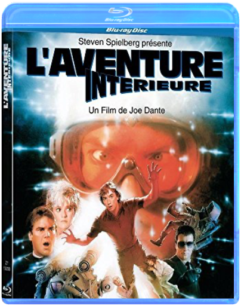
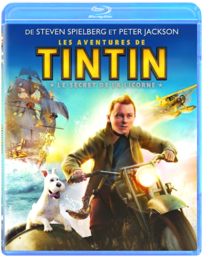
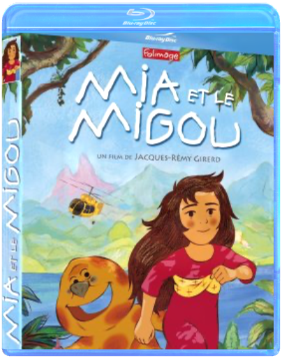
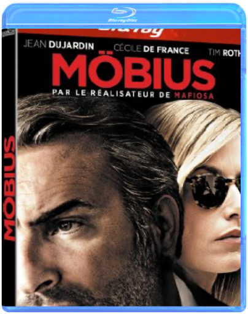

l'aventure intérieurejoe dante  Quick Shipping !!! New And Sealed !!! This Disc WILL NOT play on standard US DVD player. A multi-region PAL/NTSC DVD player is request to view it in USA/Canada. Please Review Description.  là-hautwalt disney là-hautwalt disney Contenu et bonus : Blu-ray 2 disques  Le Geant De FerBrad Bird Le Geant De FerBrad Bird Hogarth Hughes just rescued an enormous robot that fell from the stars to Earth. Now young Hogarth has one very big friend and an even bigger problem: how do you keep a 50-foot-tall, steel-eating giant a secret? les aventures de tintin : le secret de la licornesteven spielberg Parce qu'il achète la maquette d'un bateau appelé la Licorne, Tintin, un jeune reporter, se retrouve entraîné dans une fantastique aventure à la recherche d'un fabuleux secret. En enquêtant sur une énigme vieille de plusieurs siècles, il contrarie les plans d'Ivan Ivanovitch Sakharine, un homme diabolique convaincu que Tintin a volé un trésor en rapport avec un pirate nommé Rackham le Rouge. Avec l'aide de Milou, son fidèle petit chien blanc, du capitaine Haddock, un vieux loup de mer au mauvais caractère, et de deux policiers maladroits, Dupond et Dupont, Tintin va parcourir la moitié de la planète, et essayer de se montrer plus malin et plus rapide que ses ennemis, tous lancés dans cette course au trésor à la recherche d'une épave engloutie qui semble receler la clé d'une immense fortune... et une redoutable malédiction. De la haute mer aux sables des déserts d'Afrique, Tintin et ses amis vont affronter mille obstacles, risquer leur vie, et prouver que quand on est prêt à prendre tous les risques, rien ne peut vous arrêter... mia et le migoujacques-rémy girerd Alertée par un pressentiment, Mia décide de quitter son village natal d'Amérique du Sud pour partir à la recherche de son père. Ce dernier travaille sur un chantier gigantesque visant à transformer une forêt tropicale en luxueuse résidence hôtelière. Pour retrouver son papa, Mia doit franchir une lointaine montagne, entourée d'une forêt énigmatique et peuplée d'êtres mystérieux. Une expérience extraordinaire' möbiuséric rochant Grégory Lioubov, un officier des services secrets russes, est envoyé à Monaco afin de surveiller les agissements d'un puissant homme d'affaires. Dans le cadre de cette mission, son équipe recrute Alice, une surdouée de la finance. Soupçonnant sa trahison, Grégory va rompre la règle d'or et entrer en contact avec Alice, son agent infiltré. Naît entre eux une passion impossible qui va inexorablement précipiter leur chute. star wars - coffret collector blu-raygeorges lucas La saga inter-galactique la plus populaire du monde va enfin bénéficier d'un son et d'une image HD ! |


 Made with Delicious Library
Made with Delicious LibraryNancy, State zipflap congrotus delicious library Thomas, Julien